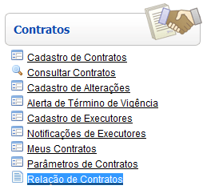
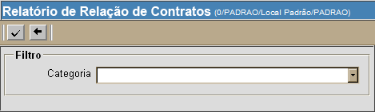
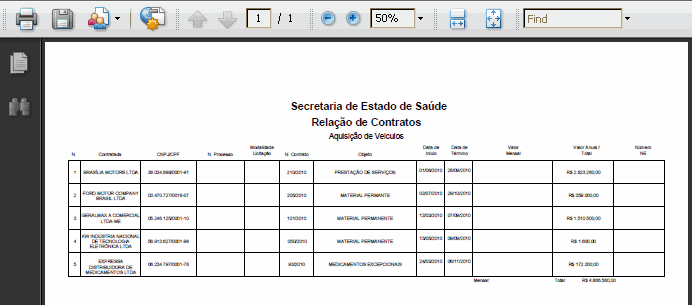

Relação de Contratos [
Voltar
]
Utilize
este formulário para listar todos os contratos por categoria. A
listagem exibe os contratos existentes, assim como suas informações
principais (contratada, núm. do contrato, vigência, valor total, etc).
O formulário "Relação de
contratos" encontra-se no menu "Contratos".

Após clicar no formulário, o sistema abrirá
a seguinte tela:

1°
Passo: selecione uma das categorias disponíveis. As
categorias disponíveis são:
- 1. Fornecimento
de Alimentação Hospitalar
- 2. Serviço
de Limpeza Hospitalar
- 3. Serviços
Assistenciais
- 4. Serviço
de Vigilância e Portaria
- 5. Fornecimento
de Material de Consumo Hospitalar
- 6. Serviços
de Manutenção de Equipamentos
- 7. Serviços
de Manutenção Predial
- 8. Serviços
de Manutenção de Veículos
- 9. Serviços
de Informática
- 10. Serviços
Administrativos
- 11. Obras
e Serviços de Engenharia
- 12. Serviços
Terceirizados
- 13. Materiais
de Consumo
- 14. Fornecimento
de Medicamento Hospitalar
- 15. Fornecimento
de Medicamentos Excepcionais
- 16. Aquisição
de Móveis
- 17. Aquisição
de Equipamentos
- 18. Aquisição
de Material de Limpeza
- 19. Aquisição
de Veículos
2° Passo: em
seguida, clique no botão  para gerar o relatório. para gerar o relatório.

Para imprimir, clique no botão  [Imprimir]
do navegador. [Imprimir]
do navegador.
Ir para o topo da
página
|